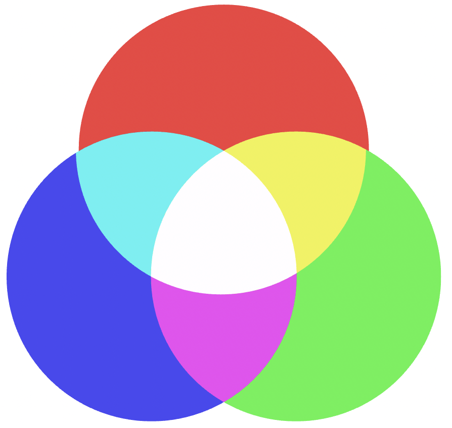
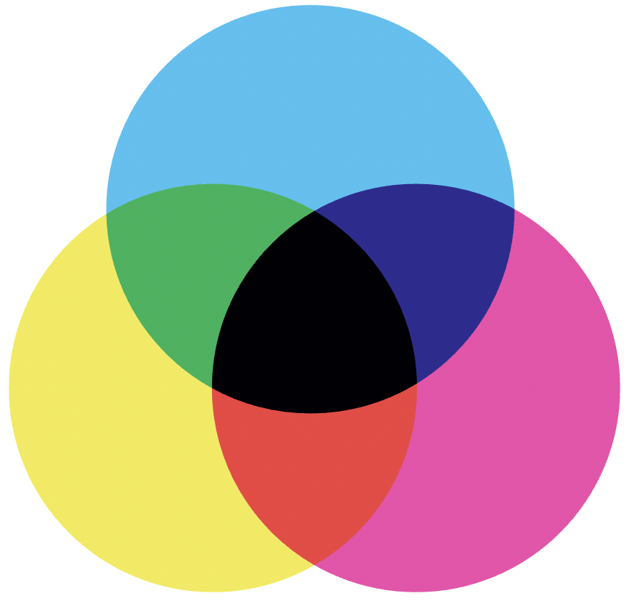

My finished assignment
Persona

Venn Diagram goals

Customer Journey Map

User Flow

Assignment 1 Reflection:
-
Thinking up a persona is a lot harder than I thought it would be. I guess it goes to show how diverse the needs and wants off users can be. Creating a persona for the different intended users is important so that the app can be designed in a way that considers all it's users.
-
I found the venn diagram definitely helped me to step into the shoes of my user. It forces to think from a different perspective. It was really interesting seeing which overlapped betwen the designer and the user. It also relates to a marketing perspective as it finds where the value is for each party involved.
-
The user flow will definitely help inform the direction of my next assignment. It helps to know the different steps of the process that need to be designed. Although I don't know if this is the finalised user flow it definitely gives designing a starting point.
Week Six: Assignment 2.1 intro, colour & typography
Colour
RGB

- mainly used for digital formats.
- Additive colour model.CMYK

- mainly used for print formats.
- Subtractive colour model.Pantone
Standardised system for identifying and matching colours.
I've used all three of these colour systems. I find it easiest to use hex codes which is great for digital formats like a website.
I'm not sure what type of colour scheme my website design will have but most likely analogous or complementary. I like the idea of haveing one or two accent colours with a high contrast. This also should make sure that my colour scheme has good accessibility for people with vision impairments.
My colour tones should be friendly, relate to nature, and inspirational.
Typography
- Typeface
- Identity
- Font Size
- Font Scaling
- Leading
- Paragraph width
- Accessibility
There's a lot to consider with fonts. Lots of which I haven't conciously considered before.
My font for my website should match the tone of the colours. It's really important that it's readible so that my users are able to easily understand it, especially as the website is designed to help people learn a skill.
Week Seven: Composition & assignment 2.1 submission
Composition
This weeks class covered the different types of composition and affordances in web design.
My finished assignment
Overall I'm pretty happy with my final design. If I had more time I would design further pages such as the more unique customisable parsonalised garden map. I would have also liked to make more of components fully interactive.
This assignment really pushed my web design skills. I'm still just getting the hang off thinking of compositions that format well as websites too, not just graphically. An example of this is getting the header and navigation bar the right size in relation to the rest of the components in the screen.
This assignment is one of the more complex figma projects I've done and it's the first where I tried making local styles and wireframes. My organisation is definitely not perfect yet but I feel that this assignment has help me grow my ability in that area.


Week Eight: Assignment 2.2 brief

CMS or Code?
I decided to use CMS for the second half of assignment 2 as I'm very new to coding and with such a tight time frame to get it done, I don't want to compromise on my design.
Since starting my project on Webflow I've actually found that I'm using alot of my knowledge learnt through the coding lectures. I think that using a CMS like Webflow is a good stepping stone to coding. The interface has similiarities to figma and adobe illustrator, both of which I'm accustomed to, but uses similiar language and tools used in HTML. For example, sections, flex boxes, and grids.
Assignment Progress
I've started planning how I will build my website. I had a quick try at coding it but I went in with no plan and so I very quickly felt overwhelmed.
To the right you can see that I have made quick sketches mapping out all the sections, and major components of my design. It makes itt much more managable although there is a lot going on!
Week Nine: Responsive Design & labelling files
Break Points
Seem pretting important. I think that if I was restarting my design process, and designing for a both mobile and desktop, I would build up from the mobile screen size.
Typography
Trialing out these different font size measurements and they're a bit confusing to get the hang of, however, they deffinitely are worth it when they work.
Testing Responsiveness
I'm going to make sure to continue to test for resposiveness through out my assignment so that I can make changes to the design as I go.
Assignment Progress
After today's lecture I made sure to download and label all the images and graphics that I need for my design. I know from my experiences usinf figma I can quickly forget to label thing consistently and it becomes pretty messy. So, this time I've made sure to do it first!

Week Ten: assignment 2.2
Assignment Progress
A major keypoint in my assignment progress happened this week. After to speaking to the tutors during projects support, I started using grids to replicate the layout from my figma design.
It made making the layout much easier to make responsive and less complicated than what I was doing before.
Using Webflow has definitely helped build my understanding of coding for web design, even though its CMS.
The Neighbourhood Garden Project website is coming along pretty well, but I'm definitely learning as I go. There are a few things that I'm struggling with and if I had more time I'd make it more interactive.
Week Eleven: Assignment 2.2 Submission and Reflection
Assignment Reflection
-
Making things responsive is hard. There are a lot of different moving parts to think about. I think I have a new found appreciation for websites that are fully responsive in ways that work well!
-
I feel that I understand how grids and flex boxes work much better. My website design required quite a few problem solving sessions but in the end I was getting much more profficient at creating grid layouts that were responsive. The most challenged part to make responsive would be the about section and the map with the region buttons over top. This is because the background images are organically shaped and would move around underneath the text/buttons when the browser size was changed. This was particularly problematic for the about section because it meant that the text was not always reable. I managed to find a solution by changing the measurement for the text to a responsive one, rather than using px, and creating a margin and padding to make sure the text stayed inside the shape.
Week Twelve: Course wrap up & future of web design
Course reflection:
-
Coding Lectures:
These were really helpful in giving a good basic foundation of understanding. Coding is like a learning a language, so the more that I have been able to practice consistently the more I've improved. I'm still very much at a beginner understanding level, but considering when I started this course I had no idea how to even start coding anything, I'd say that I've learnt heaps. Using resources, such as W3schools, alongside the coding lectures, has helped me build something like this blog (which is pretty simple) and I feel confident enough to be able to find the information I need to continue to develop and learn skills on my own.
-
Overall thoughts about the course:
This course has been pretty good! I think that I definitely have a better knowledge about Web Design. It felt pretty challenging as it was fully online. I was push out of my confidence zone, as I had no choice but to try my best to engage over zoom (something I usually feel to shy to do). So, I'm considering this good professional development as a lot of jobs are partially or full remote these days which means that learning how to contribute, and collaborate online is important to learn.
I really enjoyed learning a bit about the history of web design. It helped contextualise what we were learning. I'm also glad that we had lectures convering the different aspects of web design, such as composition, colour, typography, etc. This really helped in completing my assignments.
I've created customer journey maps user flows before but this was the first time where I created a fully fleshed out persona and used venn diagrams. I deffinitely feel as though I have more tools to use as an interaction designer.
I'm excited to continue to develop my skills and knowledge of webdesign.